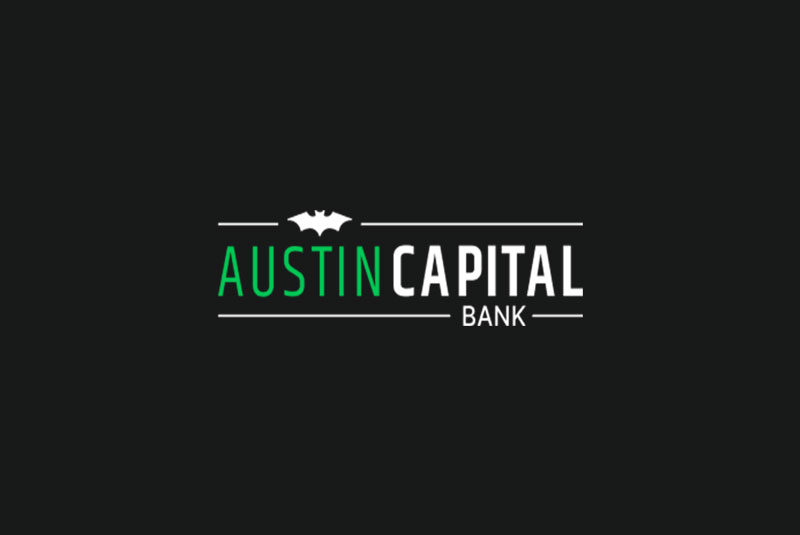

case study · in progress

Fintech Product Design Intern · Austin Capital Bank
Austin Capital Bank
designing trust
- Role
- Fintech product design
- Timeline
- Jun 2026 – Present
As a fintech product design intern, I worked across three redesigns: the plan comparison page, the Refer a Friend program, and Past Due Defender, a credit safeguard feature. Every project started from the same source of truth — listening to customer support calls to hear what was actually confusing people, alongside competitor research into how other fintechs solved the same problem.
Every Thursday, the design team held a "lunch and listen": we'd bring our lunches to a conference room and listen through recent customer service calls together. That's where Past Due Defender came from — it kept coming up as a source of confusion.
My workflow ran from ticket to handoff: research, a rough draft in Figma, then rapid back-and-forth in Claude Design to prototype and iterate before reviewing with my manager and coworkers and handing the final design to dev.
plan comparison
Card vs. table: a split decision
I worked with a full-time product designer on the onboarding flow for Credit Strong, one of Austin Capital Bank's products. We were trying to make it easier for potential customers to compare plans while onboarding, and landed on two candidates: a card view showing each plan's details on its own card, and a table view for comparing features and plans side by side.
We tested both on the other interns, a good user base since they weren't familiar enough with the credit-building product to bring bias. We expected the card view to win — it looked more appealing, and one person even said it reminded them of Apple's UI and felt trustworthy for it. But interns with more technical backgrounds — finance, data science, machine learning — tended to prefer the table, since they wanted everything visible in one view.
The result was a genuine split, so we combined both: a card view up top, with a dropdown below that reveals the full comparison table. I ran half the intern sessions and the product designer ran the other half; each session had users navigate the current live plan comparison page first, then the prototype, so we could collect their insights on both directly.
refer a friend
One clear action instead of four boxes
The previous Refer a Friend page laid out four bento-style boxes explaining the program, but nothing told customers where to focus — and the whole point of the page is getting them to copy and share their link.
My redesign led with a single hero: an illustration of a figure with a gift box, a "get $10" style headline, and a short explanation of how the program works. On mobile, the copy-link and share buttons are visible without scrolling, and copying the link now shows a confirmation. A learn more button reveals the full steps and requirements for anyone who wants the details.
past due defender
A safeguard that needs to look like one
This came directly out of the customer support call research: it was one of the most common complaints we heard, so it was clear the redesign was addressing a real problem.
Past Due Defender is meant to cover a missed payment automatically, but whether it actually kicks in depends on two things: having enough money in savings for it to draw from, and, for some account types, staying under a limit of three uses in a row. After the third use, the customer has to make a manual payment or it gets reported to the credit bureaus as late — the opposite of a bank whose mission is helping people build credit.
The portal previously just showed "active," regardless of any of that. Customers often didn't realize they'd hit their limit, or that they lacked the savings balance for it to work, until it had already hurt them. My redesign focused on clearly communicating Past Due Defender's real status — whether it would actually cover the next missed payment — instead of a single static label.
Tools